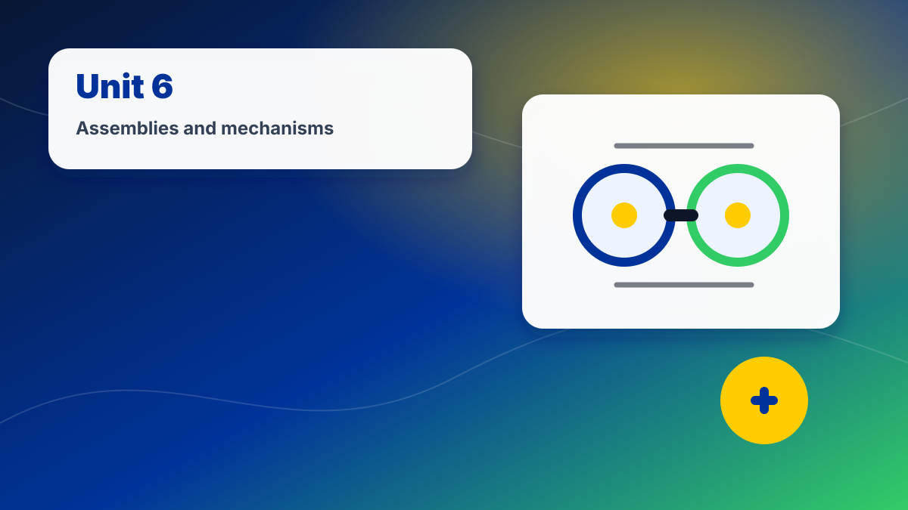
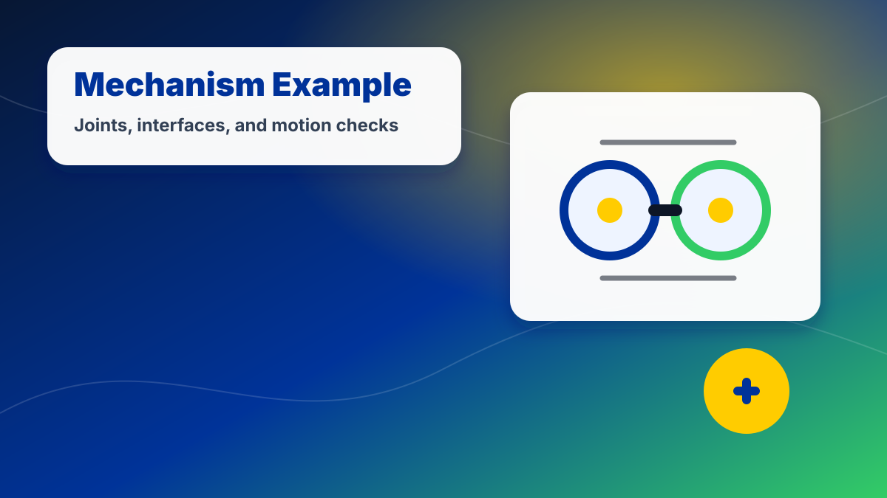
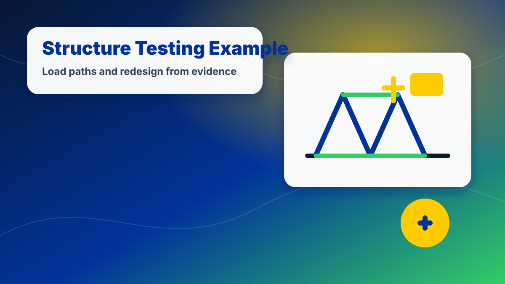

Unit 6:
Assemblies, Mechanisms & Aerospace Systems
Design multi-part systems with motion, fit, and clear assembly documentation.

Unit 6
Design multi-part systems with motion, fit, and clear assembly documentation.
Media & Examples
Use these visuals and short videos to connect this unit to real engineering work.
Real Aerospace Connection
Design systems where multiple parts fit, move, and work together.
As you work through this unit, focus on how the skill supports safer, clearer, and more testable aerospace design decisions.
Assemblies, Mechanisms & Aerospace Systems
This visual can be used as a quick reference when reviewing the unit goal, project expectations, and design context.
NASA STEMonstrations: Engineering Design Process
Use design thinking to refine systems and subsystems.
Mechanism model
Build assemblies with joints, interfaces, and motion limits.

Exploded views
Show how components fit together and are assembled.

System testing
Test the whole system, not just isolated parts.
Start Unit 6 Here
Unit 6 moves from individual parts to systems. You will design assemblies, define how parts fit together, use joints and motion, create exploded views, write assembly instructions, and evaluate how subsystems work together.
Start Here
Unit overview, learning targets, deliverables, pacing, and final mechanism project expectations.
SystemsSystems and Subsystems
Break aerospace products into systems, subsystems, parts, interfaces, and functions.
AssembliesAssembly Fundamentals
Understand components, fasteners, clearances, alignment, and assembly order.
MotionJoints and Motion
Use mechanical relationships to describe how parts move or stay fixed.
ConnectionsFasteners and Interfaces
Choose connection methods based on strength, serviceability, and manufacturing constraints.
DocumentationExploded Views
Show how parts fit together using exploded views and labeled components.
InstructionsAssembly Instructions
Write clear step-by-step directions for building a system.
TestingSystem Testing
Check fit, motion, reliability, and failure points in multi-part assemblies.
ProjectAerospace Mechanism Project
Complete the final Unit 6 mechanism design, documentation, and review package.
Unit 6 Essential Question
How do engineers combine parts into reliable aerospace systems?
Unit 6 Deliverables
- System/subsystem breakdown
- Assembly sketches
- Joint and motion notes
- Fastener/interface plan
- Exploded view
- BOM
- Assembly instructions
- System test checklist
- Final aerospace mechanism package
25-Day Unit 6 Pacing
Each lesson is designed for a 45-minute class period and can be adjusted for equipment access, testing time, or schedule interruptions.
| Day | Focus | Student Output |
|---|---|---|
| 6.1 | What makes a design a system? | System breakdown notes |
| 6.2 | Subsystems and interfaces | Aerospace subsystem map |
| 6.3 | Assembly fundamentals | Component relationship sketch |
| 6.4 | Fit, alignment, and clearance | Assembly fit notes |
| 6.5 | Fasteners and connection methods | Fastener selection chart |
| 6.6 | Motion in aerospace mechanisms | Motion example analysis |
| 6.7 | Joints and degrees of freedom | Joint identification practice |
| 6.8 | Fusion assembly workflow | Assembly setup practice |
| 6.9 | Exploded views | Exploded view notes |
| 6.10 | BOMs for assemblies | Assembly BOM practice |
| 6.11 | Assembly instructions | Procedure writing practice |
| 6.12 | System testing | Test checklist draft |
| 6.13 | Mechanism project brief | Select mechanism concept |
| 6.14 | Research and inspiration | Research notes |
| 6.15 | Concept sketches | Three mechanism concepts |
| 6.16 | Decision matrix | Selected mechanism |
| 6.17 | CAD workday 1 | Main components |
| 6.18 | CAD workday 2 | Secondary components |
| 6.19 | Assembly workday | Joints and alignment |
| 6.20 | Documentation workday | Exploded view and BOM |
| 6.21 | Instructions workday | Assembly directions |
| 6.22 | System review | Fit and motion check |
| 6.23 | Revision day | Updated assembly |
| 6.24 | Design review | Short mechanism review |
| 6.25 | Final submission | Mechanism project package |
Unit Project
Aerospace Mechanism Assembly Project: Design and document a multi-part aerospace mechanism such as a control surface hinge, landing gear concept, payload door, sensor gimbal, recovery bay, or adjustable mount.